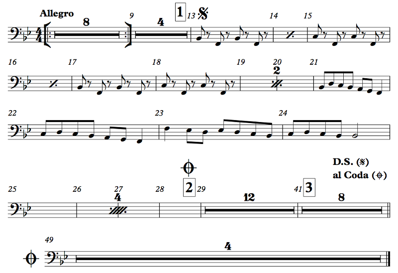

Musicians are lazy.
I rest my case! (My case is also lazy.)
No. Anyway, musicians are lazy. We like to play just one thing many times instead of playing many different things. And since we're lazy we also don't want to write that one thing many times; we just want to write it once!
You misunderstand. I am sick and fucking tired of n00bs on Reddit asking these fucking stupid questions over and over just because they don't have any musical experience and don't understand basic facts about music, and I'm writing the book so that I don't have to repeat myself over and over and fucking over in /r/musictheory with basic, basic shit. I can just write it once and refer people to it here.
...
...Not when someone is wrong on the internet! Duty calls!
...OK. Right. So. Control structures. They enable the composer to write stuff just once that the reader can play multiple times. We've already seen some examples, but let's review them.

Example 3.2
The bar with the colon after the 4/4 is a start repeat sign, and the thing with the colon at the very end is an end repeat sign. The start repeat is actually optional; the end repeat means to go back to the last start repeat or to the beginning of the music and repeat everything once. Sometimes a section is supposed to be played more than twice; there will be a written explanation to that effect like "Play 3x" in that case.
The thick horizontal line with a number on top is known as a multirest, and it means to rest for that number of entire measures. In an orchestral piece, oftentimes only part of the ensemble will be playing at any given time, so everyone else is just sitting there waiting. Their rests are usually written like this. (Sometimes a player shouldn't play at all for a movement; that part will be marked tacet — not "tacit"; that's a different word — for the movement instead of being given notated rests.) Here's another example of multirests, plus a whole other stuff:
Example 3.3
The first thing is a set of repeat signs that have consumed Red Bull and acquired wings. The wings are just there to make the repeats easier to see; they don't actually have any meaning. Allegro is a tempo marking that means "fast". At measure 13, see that 1 in a box? That's a rehearsal number. It's useful when your bandmate wants to start at number 1; you know where that is. There's also a weird symbol there; we'll get back to that symbol later. Measure 14 has a little percent sign thingy. That is a measure repeat symbol; it just means to repeat the previous measure. It's common to see a bunch of these in a row if you're just playing the same thing over and over. There it is again at 16. At 19 and 20, that's a 2-measure repeat sign; it means to repeat the previous two measures. At 25 you have a 4-measure repeat sign; its function should be obvious by now. At number 2 there's another weird symbol; we'll get back to it in a moment. At number 3, we have an example of multirest splitting: why is there not a combined 20-measure multirest? Because the rehearsal number 3 is splitting that multirest. When the conductor wants to start at number 3, you don't need to do math to figure out where that is in your measure counting. At the end of that, though, there's a D.S. al Coda, del segno al coda, from the sign to the coda. A coda is an ending tag. So, you go back to the sign — that's at rehearsal number 1 — and go all the way until you see the coda symbol — that's rehearsal 2 — and jump to the coda at measure 49. Two more flow control bits are here, but we've seen them plenty of times before. The double bar right before the coda merely separates sections of the music, and the solid double bar at the end signifies the end of the piece, or end of the movement, as the case may be.
With difficulty! The simplest way is to count: 1, 2, 3, 4, 2, 2, 3, 4, 3, 2, 3, 4, 4, 2, 3, 4, 5, 2, 3, 4, etc. You can also count on your hands, though that becomes a little bit less useful when you have 30-something-measure rests and only 5 fingers in your hand. Being a math nerd, I figured out how to count on my hand using binary; this lets you count up to 31 with one hand or 1023 with both hands together. That's easy: your thumb is the 1's bit, your index finger is your 2, your middle finger is your 4, etc. So, for measure 11, that's 8 + 2 + 1 so you hold up your thumb, index finger, and ring finger. Your thumb goes in and out every bar; your index finger does it every 2 bars, your middle finger every 4, etc. This has the added benefit of flipping off your conductor on bar 4.
Ha ha ha. Funny. You try playing percussion and see how quickly you get lost in the 64-measure rests with that kind of attitude! (As a percussionist in college, I could actually take a bathroom break during the rests sometimes and still get back before I had any notes to play.)
That said, in some music you don't really need to count, especially as you learn the piece better. You can learn when you'll need to come back in, and the conductor will hopefully give you a cue — a nod or a point or something — to let you know that it's time.
")
Example 3.4
These rehearsal numbers are just the measure numbers for the specified measures.
Taste. I generally prefer letters, honestly. Bar numbers are useful, since in general not every bar number is marked. Most of the time, rehearsal numbers go at significant points in the music, but some composers prefer to put a rehearsal number every 5 bars to make it easier to count; if you say "bar 116" that's obviously the bar after 115. I personally hate sequential numbers. When I was a freshman in high school, I got picked to be first chair clarinet of my All-County honor band. My band directors couldn't believe it. Neither could I. There was no way I was that good. (I think I impressed the judges with my dynamics, actually. Use dynamics.) Anyway, as first chair I got to do some solos, and I had a solo in one piece, Elsa's Procession to the Cathedral by Wagner. There is a lot to hate about Wagner, and he decided to compound it all by using fucking sequential numbers. So when the conductor wanted me to start at number 2, I thought he meant measure 2 (I was in way over my head so I was in a bit of sensory overload at that moment) and didn't come in on my solo. Fucking embarrassing. I eventually figured it out, but we'd already moved on. Well, I don't want any poor unfortunate soul to fall prey to this anti-Semitic trap, so I don't use sequential numbers.
Wagner used them, so yeah.
...Maybe. Dude, the numbers weren't even in boxes! How the fuck was I supposed to find them?
I am over it, dammit! Still, I don't use sequential numbers. Too confusing.
Measure 3? Nothing. Oh, that. That's just what a start repeat on top of an end repeat looks like without wings.
We have a few more control structures here. At measure 11 we have a first ending. So, when we're going from 9 the first time, we go to the first ending, and that repeat sign will land us back at 9. The second time, we skip the first ending and go to the second ending. That also has a repeat; we take the repeat and end up back at 9 a third time, and this time we skip over the first and second endings and take the third ending. Here, there's a D.C. al Fine. D.C. stands for da capo, from the start. So, you go back to the start, and you stop where it says Fine, meaning "end".
Yes, but just once. The convention is that you don't take repeats on a D.C. or D.S. By the way, I noticed that you used mm. Nice. Usually, m. is the abbreviation for "measure", so m. 69 is measure 69. The plural is actually mm., so mm. 69-70 means measures 69 to 70.
I'll let you figure it out first!
OK, it's: 1 2 1 2 3 4 3 4 5 6 7 8 9 10 11 12 9 10 13 14 9 10 15 16 1 2 3 4. Try to follow all the repeats correctly and see if you get that.
They are... mostly. By the way, there are some repeat possibilities that I didn't go into, but they use the same symbols. You may have, for example, an ending with 1., 3. written on it, meaning that the ending is taken on the first and third times, and the second ending is different and repeats back. It's usually not difficult to follow this stuff. Also fairly common are instructions to play something 1st time only or 2nd time only. Sometimes there'll be two dynamic markings listed with instructions for which is to be used the first time and which the second. In vocal music, sometimes the rhythm differs between verses or there's an extra pickup somewhere, so notes in parentheses or with smaller noteheads may be used to demonstrate the other verse's rhythm. It's usually pretty self-explanatory.
What is actually difficult about repeats is... remembering that they exist! Far and away your biggest challenge with repeats will be skipping the first ending the second time, going back to the right spot, etc. It's really easy conceptually, but when you're focused on reading the notes, you just forget. It happens to all of us.
Sometimes music is supposed to repeat indefinitely. A vamp in a musical, for example, does this, when the music needs to just keep repeating until something happens or is done happening. We actually have hand signs for this. I usually just hold up one finger to tell people to take the first ending and two for second ending. The sign for repeating is just a rolling motion. The sign for not repeating is a closed fist; it means "we're not taking the repeat". If you're the one giving this sign, you should do it fairly early so that you have time to get everyone's attention; it can be really ugly if everyone stops except one dude who wasn't looking.
Finally, some music can get really weird with repeats. Terry Riley's In C is an example. It consists of 53 short phrases, and each musician plays each of these phrases as many times as he or she wants before moving on to the next. I'm not going to link to a recording, but you can look for one if you want to listen to something really boring for an hour. But it's, like, next level boring. It's so boring that it's interesting. It's like watching a screensaver that starts as one shape and ends in another, and you want to keep watching it to see what it does, but it's still a fucking screensaver. That's In C. It's pure genius, but it's the kind of pure genius that only some people recognize while other people think it sounds like how going to the RMV feels. To me, listening to In C is transformative. To other people, it's the musical equivalent of being on hold. But it's not. When you're on hold the music just repeats, and every few seconds some voice reminds you that you're on hold because they're serving other customers. In C doesn't repeat. Ever. It's never the same way twice.